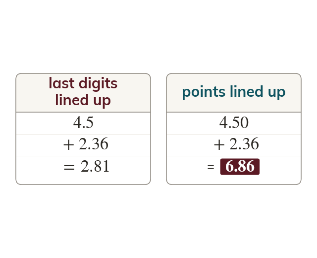

Line up the points
Line up the decimal points: only same-place digits can be added. The answer's point sits directly below.
Only digits of the same place value can be added, so the decimal points are lined up. The point in the answer sits directly below them.